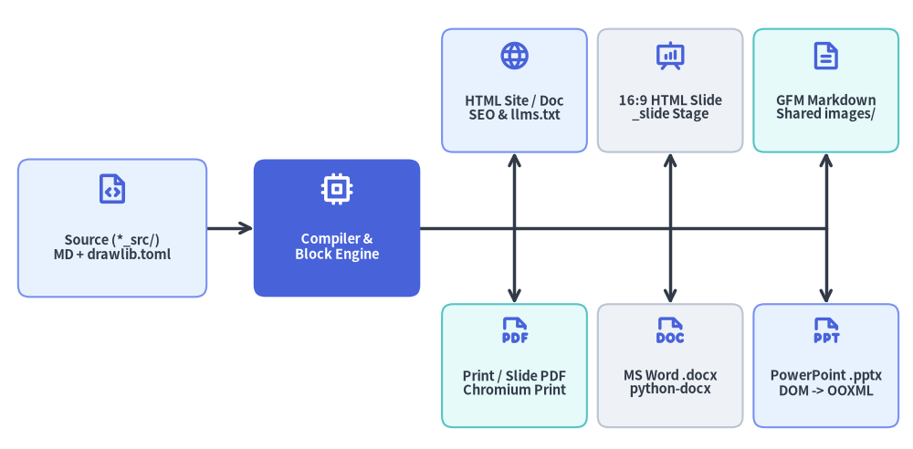
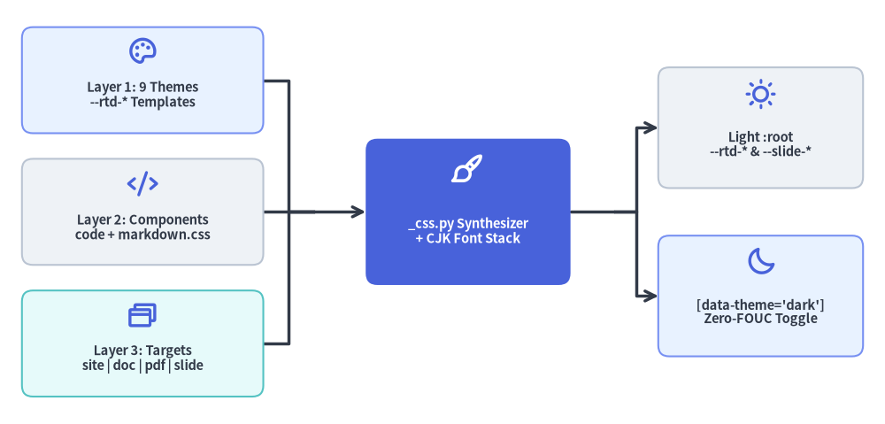

Multi-Target Exporters (HTML, Slide, PDF, Word, PowerPoint & Markdown)
Enterprise engineering teams consume technical knowledge across fundamentally different mediums: interactive documentation portals, 16:9 architecture review decks, print-ready vector PDFs for compliance and RFCs, editable Microsoft Word (.docx) and PowerPoint (.pptx) deliverables for stakeholder collaboration, and GitHub Flavored Markdown (GFM) inside source repositories.
Drawlib's compiler layer (_builder/doc_builder/, _slide/, _builder/_common/, and _templates/_css.py) implements Single-Source Multi-Target Compilation: one declarative project directory (*_src/ + drawlib.toml) compiles into six distinct deliverables while sharing a single SQLite diagram cache (.drawlib/cache.db).

Source Code
from drawlib.canvas import save, setup
from drawlib.diagrams.architecture import ArchitectureDiagram, Node, PhosphorIcon
from drawlib.styles import Styles
setup(width=126, height=62)
d = ArchitectureDiagram(
node_style=Styles.PrimaryBold,
node_text_style=Styles.DarkBold.patch(text_size=10.5),
edge_style=Styles.DarkBold,
edge_text_style=Styles.Dark.patch(text_size=10.0),
node_card_style=Styles.Neutral.patch(shape_r=1.6),
)
src = d.add(
Node(
"Source (*_src/)\nMD + drawlib.toml",
width=26,
height=19,
icon=PhosphorIcon.FILE_CODE,
icon_size=4.8,
card_style=Styles.PrimaryNeutral.patch(shape_r=1.6),
),
xy=(13.5, 28.0),
)
hub = d.add(
Node(
"Compiler &\nBlock Engine",
width=23,
height=19,
icon=PhosphorIcon.CPU,
icon_size=4.8,
style=Styles.WhiteBold,
text_style=Styles.WhiteBold.patch(text_size=10.5),
card_style=Styles.PrimaryFlat.patch(shape_r=1.6),
),
xy=(44.5, 28.0),
)
# Top Row: Web, Slide Stage & Git Deliverables
t_html = d.add(
Node(
"HTML Site / Doc\nSEO & llms.txt",
width=20,
height=17,
icon=PhosphorIcon.GLOBE,
icon_size=4.5,
card_style=Styles.PrimaryNeutral.patch(shape_r=1.5),
),
xy=(69.0, 47.0),
)
t_slide = d.add(
Node(
"16:9 HTML Slide\n_slide Stage",
width=20,
height=17,
icon=PhosphorIcon.PRESENTATION_CHART,
icon_size=4.5,
card_style=Styles.Neutral.patch(shape_r=1.5),
),
xy=(90.5, 47.0),
)
t_md = d.add(
Node(
"GFM Markdown\nShared images/",
width=20,
height=17,
icon=PhosphorIcon.FILE_TEXT,
icon_size=4.5,
card_style=Styles.SecondaryNeutral.patch(shape_r=1.5),
),
xy=(112.0, 47.0),
)
# Bottom Row: Print & Native Office Deliverables
t_pdf = d.add(
Node(
"Print / Slide PDF\nChromium Print",
width=20,
height=17,
icon=PhosphorIcon.FILE_PDF,
icon_size=4.5,
card_style=Styles.SecondaryNeutral.patch(shape_r=1.5),
),
xy=(69.0, 9.0),
)
t_docx = d.add(
Node(
"MS Word .docx\npython-docx",
width=20,
height=17,
icon=PhosphorIcon.FILE_DOC,
icon_size=4.5,
card_style=Styles.Neutral.patch(shape_r=1.5),
),
xy=(90.5, 9.0),
)
t_pptx = d.add(
Node(
"PowerPoint .pptx\nDOM -> OOXML",
width=20,
height=17,
icon=PhosphorIcon.FILE_PPT,
icon_size=4.5,
card_style=Styles.PrimaryNeutral.patch(shape_r=1.5),
),
xy=(112.0, 9.0),
)
src.connect(hub, arrow="->")
j1 = d.junction((69.0, 28.0))
j2 = d.junction((90.5, 28.0))
j3 = d.junction((112.0, 28.0))
hub.connect(j1, arrow="-")
j1.connect(j2, arrow="-")
j2.connect(j3, arrow="-")
j1.connect(t_html, arrow="->")
j1.connect(t_pdf, arrow="->")
j2.connect(t_slide, arrow="->")
j2.connect(t_docx, arrow="->")
j3.connect(t_md, arrow="->")
j3.connect(t_pptx, arrow="->")
d.draw(xy=(2.0, 2.5))
save()
1. Exporter Matrix & Locale Output Layout
Every multi-locale project ([i18n] in drawlib.toml) compiles deterministically across all configured langs while deduplicating identical rendered diagrams into a shared images/ directory:
| CLI Command | Compiler & Exporter Modules | Output Artifact Layout | Key Architectural Mechanics |
|---|---|---|---|
drawlib build html |
compiler/html.py, exporter_html.py, _common/seo.py |
<base>_html/<lang>/, shared <base>_html/images/, rebased /index.html, sitemap.xml, robots.txt, llms.txt |
Compiles site and doc projects with Jinja2 template.html, navbar.py external link icons, language switcher (2+ locales), @font-face SVG bundling, and SEO/LLM metadata. |
drawlib build slide |
_slide/compiler.py, _slide/_assets.py |
<base>_html/<lang>/index.html + root redirect /index.html |
Compiles slide projects into an interactive 1920×1080 16:9 HTML stage with keyboard/presenter controls and inline animated SVGs. |
drawlib build pdf |
compiler/pdf.py, merger.py, exporter_pdf.py, _common/browser.py |
<base>_<lang>.pdf (or single .pdf) |
Prints merged doc chapters (base64 PNG Data URLs + --generate-index TOC) or slide decks (inline SVG + @font-face, prefer_css_page_size=True) via managed chromium-headless-shell. |
drawlib build docx |
compiler/docx.py, exporter_docx.py, _common/office.py |
<base>_<lang>.docx (or single .docx) |
Pure-Python _DocxChapterRenderer walking MarkdownIt tokens into native python-docx OOXML styles, tables, Pygments code blocks, --generate-index TOC, and 200 DPI PNGs. |
drawlib build pptx |
_slide/compiler_pptx.py, _pptx_dom.py, _pptx_writer.py |
<base>_<lang>.pptx (or single .pptx) |
Measures live 1920×1080 Chromium DOM geometry and CSS styles, emitting native editable 960×540 pt python-pptx cards, tables, ::: note speaker notes, and 240 DPI PNGs. |
drawlib build markdown |
compiler/markdown.py, exporter_md.py |
<base>_markdown/<lang>/, shared images/, root index.md (site) |
Emits clean GFM keeping .md internal links, pure  syntax when no layout overrides exist, and <details class="drawlib-code-details"> when code=fold. |
2. Three-Layer CSS Synthesizer & --rtd-* Design Tokens
Rather than shipping monolithic static stylesheets, _templates/_css.py (get_css()) dynamically synthesizes style.css by concatenating three modular CSS layers and applying locale-specific CJK font stacks (localize_css_for_language()):

Source Code
from drawlib.canvas import save, setup
from drawlib.diagrams.architecture import ArchitectureDiagram, Node, PhosphorIcon
from drawlib.styles import Styles
setup(width=121, height=58)
d = ArchitectureDiagram(
node_style=Styles.PrimaryBold,
node_text_style=Styles.DarkBold.patch(text_size=10.5),
edge_style=Styles.DarkBold,
edge_text_style=Styles.Dark.patch(text_size=10.0),
node_card_style=Styles.Neutral.patch(shape_r=1.5),
)
l1 = d.add(
Node(
"Layer 1: 9 Themes\n--rtd-* Templates",
width=33,
height=14.5,
icon=PhosphorIcon.PALETTE,
icon_size=4.2,
card_style=Styles.PrimaryNeutral.patch(shape_r=1.5),
),
xy=(16.5, 44.0),
)
l2 = d.add(
Node(
"Layer 2: Components\ncode + markdown.css",
width=33,
height=14.5,
icon=PhosphorIcon.CODE,
icon_size=4.2,
card_style=Styles.Neutral.patch(shape_r=1.5),
),
xy=(16.5, 26.0),
)
l3 = d.add(
Node(
"Layer 3: Targets\nsite | doc | pdf | slide",
width=33,
height=14.5,
icon=PhosphorIcon.BROWSERS,
icon_size=4.2,
card_style=Styles.SecondaryNeutral.patch(shape_r=1.5),
),
xy=(16.5, 8.0),
)
synth = d.add(
Node(
"_css.py Synthesizer\n+ CJK Font Stack",
width=28,
height=20.0,
icon=PhosphorIcon.PAINT_BRUSH,
icon_size=4.6,
style=Styles.WhiteBold,
text_style=Styles.WhiteBold.patch(text_size=10.5),
card_style=Styles.PrimaryFlat.patch(shape_r=1.6),
),
xy=(61.0, 26.0),
)
light_out = d.add(
Node(
"Light :root\n--rtd-* & --slide-*",
width=28,
height=16.5,
icon=PhosphorIcon.SUN,
icon_size=4.3,
card_style=Styles.Neutral.patch(shape_r=1.5),
),
xy=(101.0, 37.5),
)
dark_out = d.add(
Node(
"[data-theme='dark']\nZero-FOUC Toggle",
width=28,
height=16.5,
icon=PhosphorIcon.MOON,
icon_size=4.3,
card_style=Styles.PrimaryNeutral.patch(shape_r=1.5),
),
xy=(101.0, 14.5),
)
j_in = d.junction((40.0, 26.0))
l1.connect(j_in, arrow="-")
l2.connect(j_in, arrow="-")
l3.connect(j_in, arrow="-")
j_in.connect(synth, arrow="->")
synth.fork([light_out, dark_out], at_x=81.0)
d.draw(xy=(3.0, 3.0))
save()
2.1. Layer Composition & Built-In Presets
- Layer 1 — Theme Token Templates (
_templates/css/themes/<preset>.css.template): Defines 9 built-in presets (default,default-dark,default-auto,google,google-dark,google-auto,github,minimal, andmonochrome) parameterized by{{FONT_STACK}}and{{MONO_FONT_STACK}}. All colors and typography flow through--rtd-*custom properties::root, [data-theme="light"] { --rtd-bg-color: #f8fafc; --rtd-content-bg: #ffffff; --rtd-surface-bg: #f8fafc; --rtd-text-color: #334155; --rtd-heading-color: #0f172a; --rtd-brand-color: #2563eb; --rtd-border-color: #e2e8f0; --rtd-code-bg: #f1f5f9; --rtd-font: {{FONT_STACK}}; --rtd-mono-font: {{MONO_FONT_STACK}}; } - Layer 2 — Shared Component Rules (
_templates/css/components/): Concatenatescode.css(Pygments syntax token colors and<details class="drawlib-code-details">collapsible source disclosures) andmarkdown.css(tables, blockquotes,<figure class="drawlib-image">frames, and typography rhythm). - Layer 3 — Target Shell Rules (
_templates/css/targets/): Appends layout rules specialized forsite.css(responsive sidebar, sticky header, language dropdown),doc.css(centered linear document),pdf.css(@pageprint pagination andbreak-inside: avoid), orslide.css(1920×1080presentation stage where--slide-bg,--slide-fg,--slide-brand, and--slide-card-bginheritvar(--rtd-*)tokens).
2.2. Zero-FOUC Theme Persistence
In template.html, an inline synchronous <script> inside <head> inspects localStorage.getItem('drawlib-theme') and window.matchMedia('(prefers-color-scheme: dark)') before first paint, stamping document.documentElement.setAttribute('data-theme', ...) so dark-mode reloads never exhibit a white Flash of Unstyled Content (FOUC). Diagram <figure class="drawlib-image"> cards retain crisp white backgrounds in dark mode so neutral vector strokes stay legible.
3. Target-Specific Exporter Mechanics
3.1. HTML (site & doc), Root Rebasing & SEO / llms.txt
compiler/html.py compiles site and doc projects (while explicitly guarding manifest.project.type == "slide" so slide decks route through drawlib build slide):
- Sidebar & External Links (
navbar.py):parse_navbar_markdown()parses<lang>/navbar.mdintoNavbarSectiontrees, resolving active page highlights and markinghttps://targets withis_external=True(target="_blank" rel="noopener noreferrer"plus an inline.nav-external-iconSVG). - Root
/index.htmlRebasing vs. Slide Redirect: BothsiteanddocHTML builds rewrite relative URLs from<default_lang>/index.htmlinto a full root<out>/index.htmlviarebase_html_relative_urls(), whereasslideHTML builds (_slide/compiler.py) emit a lightweight root redirectindex.html(write_root_redirect_html()) that forwards to<default_lang>/index.htmlwhile preserving?queryparameters and#slidehash fragments. - Font Bundling (
bundle_svg_fonts): When pages embed inline SVGs,bundle_svg_fonts()copies referenced font binaries into<out>/fonts/and injects@font-facedeclarations into per-locale<lang>/style.css. - SEO,
hreflang& AI Discovery (_common/seo.py): Injects canonical URLs,<link rel="alternate" hreflang="...">(plusx-default), Open Graph (og:*), and Twitter Card (twitter:*) tags into<head>, and emits rootsitemap.xml,robots.txt, andllms.txt(structured Markdown index of project pages and descriptions for LLM ingestion).
3.2. 16:9 Slide Stage & Native PowerPoint (.pptx)
Presentation projects (type = "slide") compile from a single Markdown deck into both web and Office formats (detailed in Animation & Slide Engines):
- Interactive HTML Stage (
drawlib build slide):_slide/compiler.pyrenders---slide separators,::: blocklayout cards,::: notespeaker notes, and keyframe-animated SVGs onto a1920×1080responsive viewport. - DOM-Measured PowerPoint (
drawlib build pptx):_slide/compiler_pptx.pyrenders static diagram frames at--dpi 240(--anim-frame last|first, defaulting tolast), launches headless Chromium (_pptx_dom.py) to extract exactgetBoundingClientRect()coordinates and computed CSS styles (rgbacard alpha blending, borders, fonts, lists, tables, inline code), and maps the1920×1080 pxstage at0.5×scale onto native editable960×540 ptpython-pptxslides (_pptx_writer.py) complete with speaker notes and deterministic ZIP metadata (normalize_opc_zip_timestamps()).
3.3. Vector Print & Slide PDF (drawlib build pdf)
compiler/pdf.py supports linear doc directories, slide directories, and standalone .md/.html files:
- Chapter Merging & Index Injection (
merger.py): Fordocdirectories,build_merged_html()concatenates sorted chapters, rewrites intra-document.mdlinks to#doc-chapter-Nanchors, inlines local<img src>assets as base64 PNG Data URLs (_inline_local_images()), inserts CSS page breaks (--page-break / --no-page-break), and—when--generate-indexis enabled—injects<nav class="pdf-toc">directly between Chapter 1 (cover/overview) and Chapter 2. Forslideprojects,build_pdf()stages the deck viabuild_slide()preserving crisp inline vector SVGs and@font-facefonts withprefer_css_page_size=True. - Managed Headless Chromium (
_common/browser.py): Usesplaywright(chromium-headless-shell). If the browser binary is missing,install_headless_chromium()acquires an exclusive POSIX file lock (fcntl.flockonplaywright_install.lock) and provisions it automatically—or pre-warms it offline viadrawlib cache download --browser/--all. - Byte-Exact Reproducibility: Unless
--timestampis passed,normalize_pdf_timestamps()rewrites PDF/CreationDateand/ModDatestrings in-place toSOURCE_DATE_EPOCH(orD:20260101000000+00'00'), preserving exact byte offsets so PDFxreftables remain valid.
3.4. Pure-Python Microsoft Word (.docx)
compiler/docx.py and exporter_docx.py compile Markdown chapters or standalone .md files directly to .docx without launching a browser:
_DocxChapterRenderer: Walks theMarkdownIt("gfm-like")token stream to construct nativepython-docxOOXML headings with internal bookmarks (_sanitize_bookmark_name), clickable hyperlinks, nested bullet/numbered lists, GFM tables, styled blockquotes, Pygments-colored monospace code blocks, and optional--generate-indexTables of Contents.- High-DPI Static Diagrams & Deterministic Packaging: Renders
drawlibblocks at--dpi 200(flattening WebP or animated outputs viaensure_static_office_image()), scales images proportionally within the178mmprintable A4 content width, and normalizes OPC core properties and ZIP entry timestamps via_common/office.py(normalize_opc_zip_timestamps()).
3.5. Rendered GitHub Flavored Markdown (drawlib build markdown)
compiler/markdown.py and exporter_md.py compile site and doc sources into <base>_markdown/<lang>/ (plus a rebased root index.md for site projects via rebase_markdown_relative_urls()) backed by a shared <base>_markdown/images/ folder:
- Adaptive Image Syntax:
DrawlibBlockProcessor.process_markdown(..., use_markdown_syntax=True)emits pure Markdownwhenever no custom sizing, alignment, or caption attributes are set, and upgrades to<figure class="drawlib-image">when layout attributes (align=center,caption="...",width=...) are requested. - Preserved Code Disclosures &
.mdLinks: Blocks markedcode=foldretain native GitHub-compatible<details class="drawlib-code-details">blocks below the figure, while internal cross-references remain.mdlinks so repository browsing on GitHub works out of the box.
Next, explore how link integrity, structural parity, and path hygiene are enforced in Link & Quality Scanner.